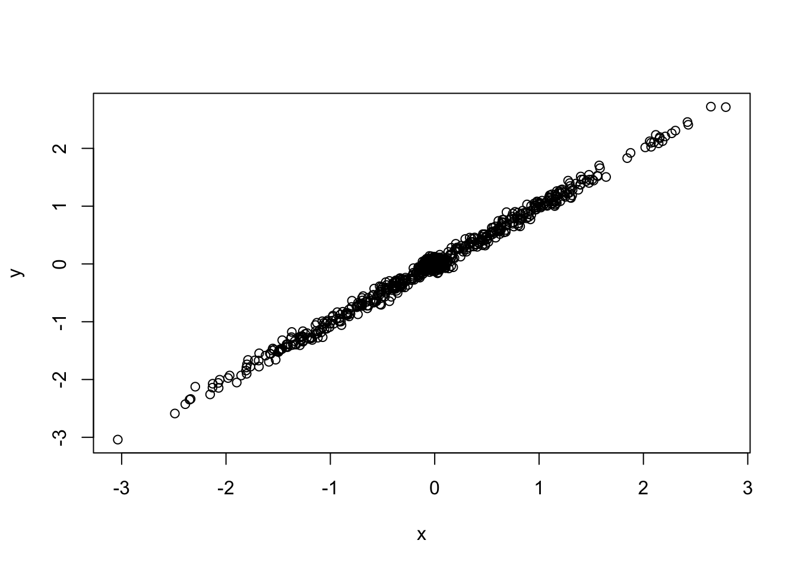
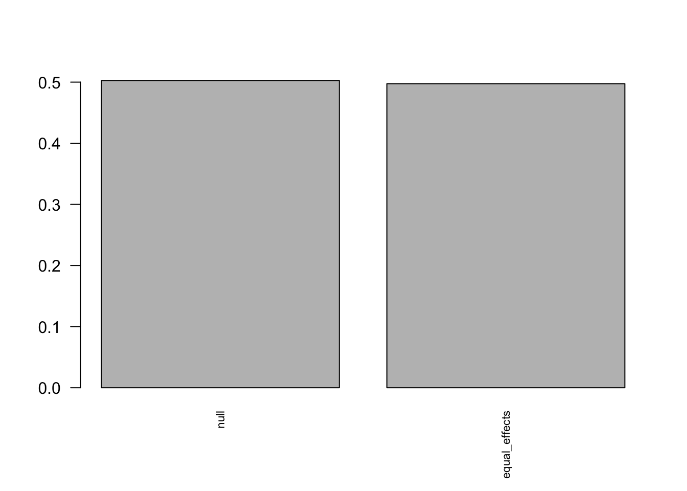
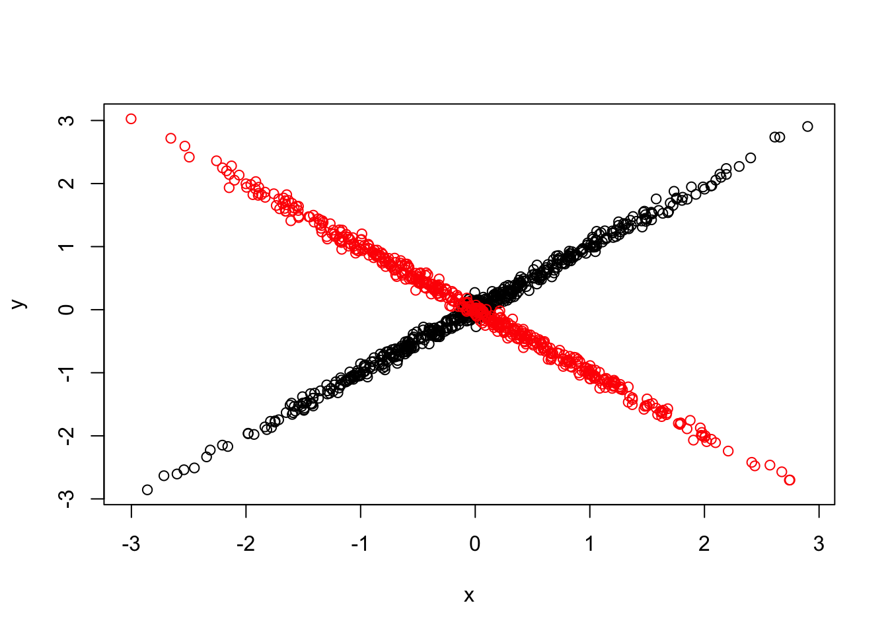
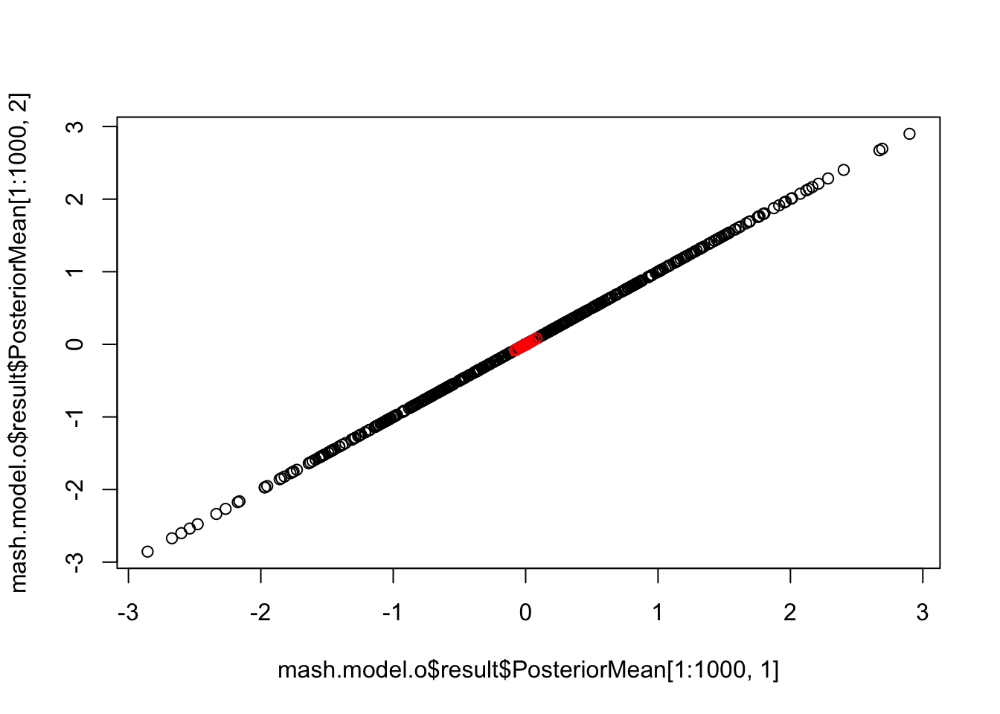
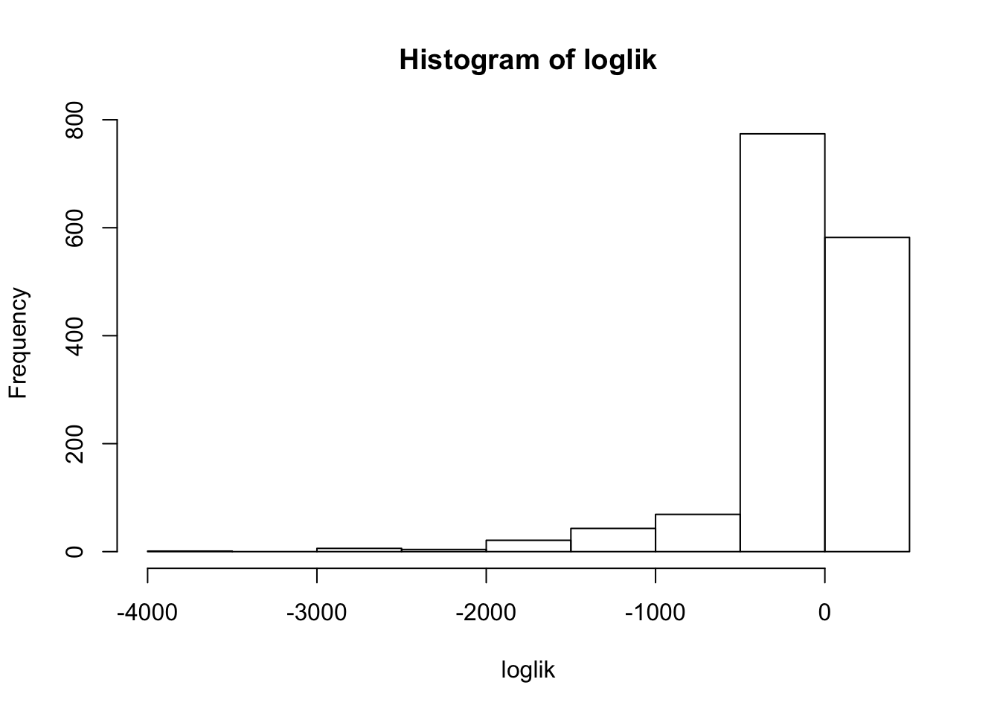
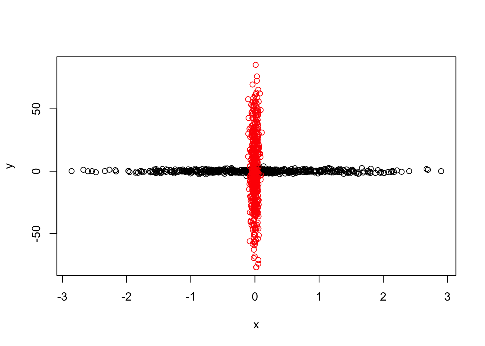
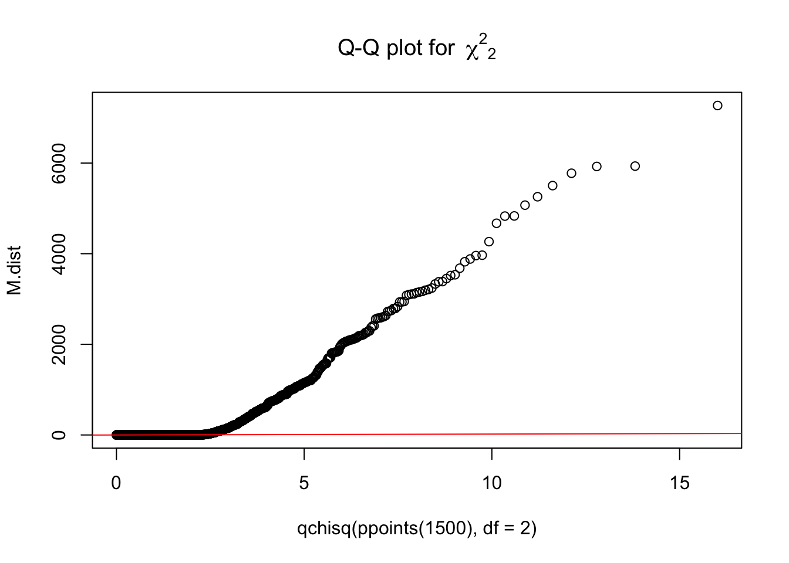

Last updated: 2018-02-06
Loading required package: ashr\[\left(\begin{array}{c} \hat{\beta}_{j1} \\ \hat{\beta}_{j2} \end{array} \right) | \left(\begin{array}{c} \beta_{j1} \\ \beta_{j2}\end{array} \right) \sim N(\left(\begin{array}{c} \beta_{j1} \\ \beta_{j2}\end{array} \right), \left( \begin{array}{c c} 0.05^2 & 0 \\ 0 & 0.05^2 \end{array} \right)) \] \[\left(\begin{array}{c} \beta_{j1} \\ \beta_{j2}\end{array} \right) \sim \frac{1}{2} \delta_{0} + \frac{1}{2}N(0, \left( \begin{array}{c c} 1 & 1 \\ 1 & 1 \end{array} \right))\]

Fit mash model:
- Computing 1000 x 23 likelihood matrix.
- Likelihood calculations took 0.00 seconds.
- Fitting model with 23 mixture components.
- Model fitting took 0.05 seconds.
- Computing posterior matrices.
- Computation allocated took 0.00 seconds. The identified covariance structures are correct.
We simulate a new dataset. \[\left(\begin{array}{c} \hat{\beta}_{j1} \\ \hat{\beta}_{j2} \end{array} \right) | \left(\begin{array}{c} \beta_{j1} \\ \beta_{j2}\end{array} \right) \sim N(\left(\begin{array}{c} \beta_{j1} \\ \beta_{j2}\end{array} \right), \left( \begin{array}{c c} 0.05^2 & 0 \\ 0 & 0.05^2 \end{array} \right)) \] \[\left(\begin{array}{c} \beta_{j1} \\ \beta_{j2}\end{array} \right) \sim \frac{1}{3} \delta_{0} + \frac{1}{3}N(0, \left( \begin{array}{c c} 1 & 1 \\ 1 & 1 \end{array} \right)) + \frac{1}{3}N(0, \left( \begin{array}{c c} 1 & -1 \\ -1 & 1 \end{array} \right))\]
set.seed(20)
nsamp = 500
B.0 = matrix(0,nsamp,2)
b = rnorm(nsamp)
B.1 = cbind(b, b)
b.out = rnorm(nsamp)
B.outlier = cbind(b.out, -b.out)
B = rbind(B.0, B.1, B.outlier)
colnames(B) = c('x','y')
# Add error
Shat = matrix(0.05, nrow = nrow(B), ncol = ncol(B))
E = matrix(rnorm(length(Shat), mean = 0, sd = Shat), nrow = nrow(B),
ncol = ncol(B))
Bhat = B + E
{plot(Bhat[1:1000,1], Bhat[1:1000,2], xlim=range(Bhat[,1]), ylim=range(Bhat[,2]), xlab = 'x', ylab='y')
points(Bhat[1001:1500,1], Bhat[1001:1500,2], col='red')
}
If we apply the mash model on this new data:
mash.data.o = mash_set_data(Bhat = Bhat, Shat=Shat)
mash.model.o = mash.model
mash.model.o$result = mash_compute_posterior_matrices(mash.model, mash.data.o)
length(get_significant_results(mash.model.o))[1] 453{plot(mash.model.o$result$PosteriorMean[1:1000,1], mash.model.o$result$PosteriorMean[1:1000,2])
points(mash.model.o$result$PosteriorMean[1001:1500,1], mash.model.o$result$PosteriorMean[1001:1500,2], col='red')} The outlier points are all shrinkaged close to 0. Using this approach, we completely ignore the addition the covariance structure in the new dataset.
We want to identify these points before using mash model.
We can get the loglikehood of the data under the fitted mash model:
loglik = mash_compute_vloglik(mash.model, mash.data.o)
hist(loglik)
which(loglik < -1000) [1] 1004 1010 1014 1017 1022 1029 1030 1033 1038 1044 1048 1052 1064 1073
[15] 1083 1091 1094 1095 1100 1103 1118 1140 1149 1151 1159 1166 1167 1168
[29] 1177 1185 1189 1206 1211 1226 1229 1247 1266 1272 1274 1281 1283 1285
[43] 1286 1288 1301 1307 1335 1337 1343 1344 1346 1358 1365 1368 1378 1379
[57] 1381 1395 1403 1412 1415 1419 1423 1424 1434 1437 1439 1445 1446 1450
[71] 1456 1466 1479 1495 1498Firstly, we decompose \(\Sigma\) using eigenvalue decomposition, \(\Sigma = QDQ'\)
Sigma = matrix(c(1+0.05^2,1,1,1+0.05^2),2,2)
eigen.sigma = eigen(Sigma)We can transform the \(\Sigma\) to identity matrix, \(D^{-1/2}Q' \Sigma = I\).
We apply this transfermation on (x y)’.
Bhat.tran = t(t(Bhat %*% eigen.sigma$vectors) * eigen.sigma$values^{-0.5})
M.dist = numeric(3*nsamp)
for(i in 1:(3*nsamp)){
M.dist[i] = t(Bhat[i,]) %*% solve(rbind(c(1+0.05^2, 1),c(1, 1+0.05^2))) %*% Bhat[i,]
}
{qqplot(qchisq(ppoints(1500), df = 2), M.dist,
main = expression("Q-Q plot for" ~~ {chi^2}[2]))
qqline(M.dist, distribution = function(p) qchisq(p, df = 2),
prob = c(0.1, 0.6), col = 2)}
sessionInfo()R version 3.4.3 (2017-11-30)
Platform: x86_64-apple-darwin15.6.0 (64-bit)
Running under: macOS High Sierra 10.13.3
Matrix products: default
BLAS: /Library/Frameworks/R.framework/Versions/3.4/Resources/lib/libRblas.0.dylib
LAPACK: /Library/Frameworks/R.framework/Versions/3.4/Resources/lib/libRlapack.dylib
locale:
[1] en_US.UTF-8/en_US.UTF-8/en_US.UTF-8/C/en_US.UTF-8/en_US.UTF-8
attached base packages:
[1] stats graphics grDevices utils datasets methods base
other attached packages:
[1] mashr_0.2-4 ashr_2.2-3 mvtnorm_1.0-7
loaded via a namespace (and not attached):
[1] Rcpp_0.12.15 knitr_1.17 magrittr_1.5
[4] REBayes_1.2 MASS_7.3-47 doParallel_1.0.11
[7] pscl_1.5.2 SQUAREM_2017.10-1 lattice_0.20-35
[10] foreach_1.4.4 plyr_1.8.4 stringr_1.2.0
[13] tools_3.4.3 parallel_3.4.3 grid_3.4.3
[16] rmeta_2.16 htmltools_0.3.6 iterators_1.0.9
[19] assertthat_0.2.0 yaml_2.1.16 rprojroot_1.2
[22] digest_0.6.13 Matrix_1.2-12 codetools_0.2-15
[25] evaluate_0.10.1 rmarkdown_1.8 stringi_1.1.6
[28] compiler_3.4.3 Rmosek_8.0.69 backports_1.1.2
[31] truncnorm_1.0-7 This R Markdown site was created with workflowr